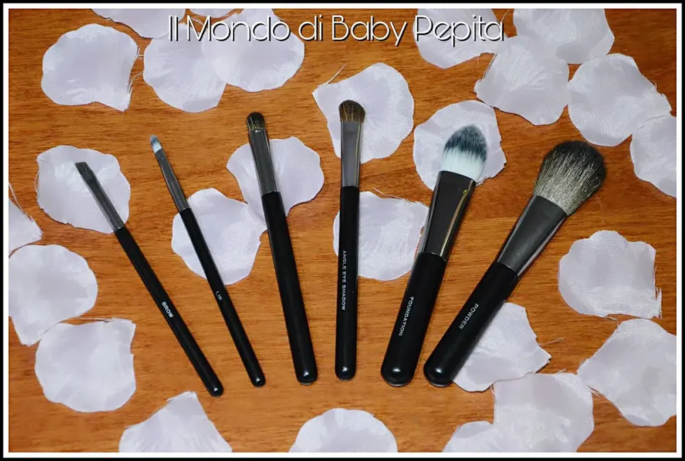
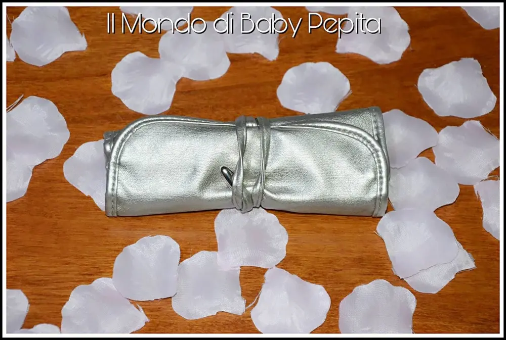
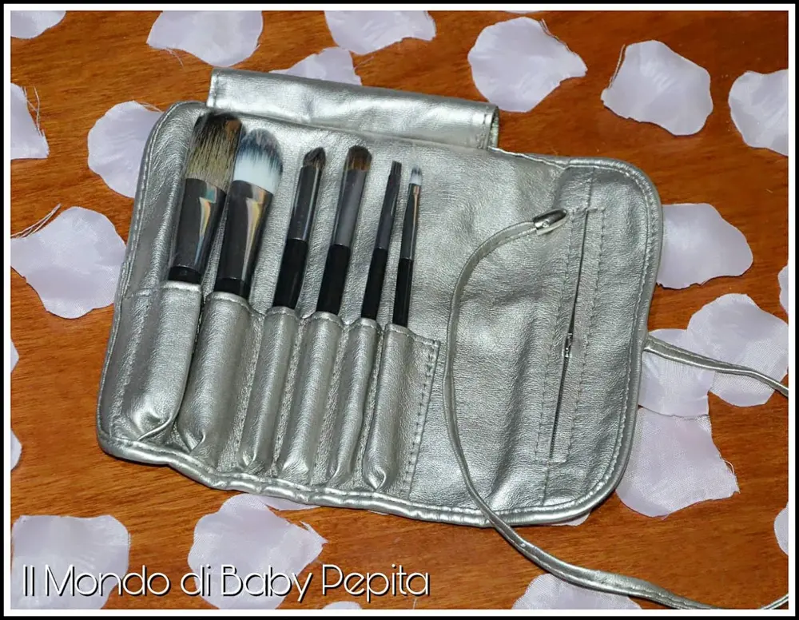
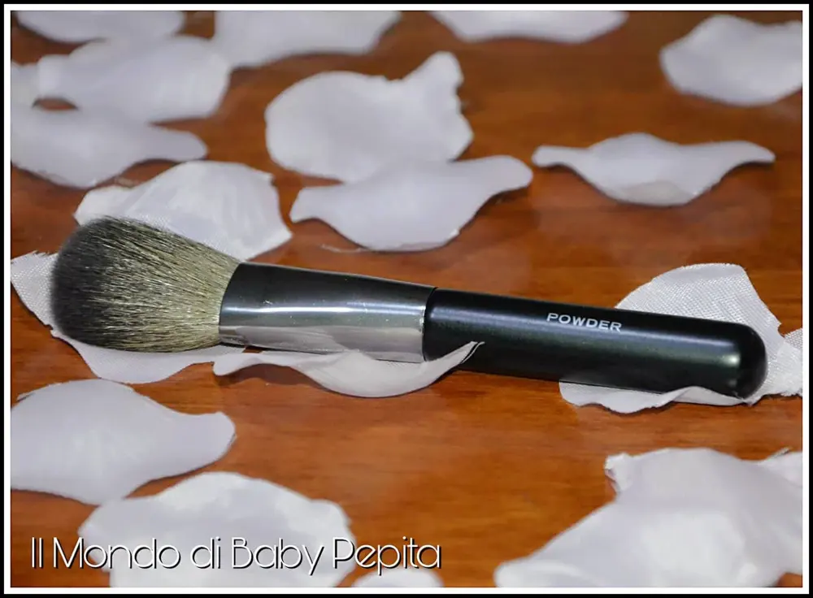
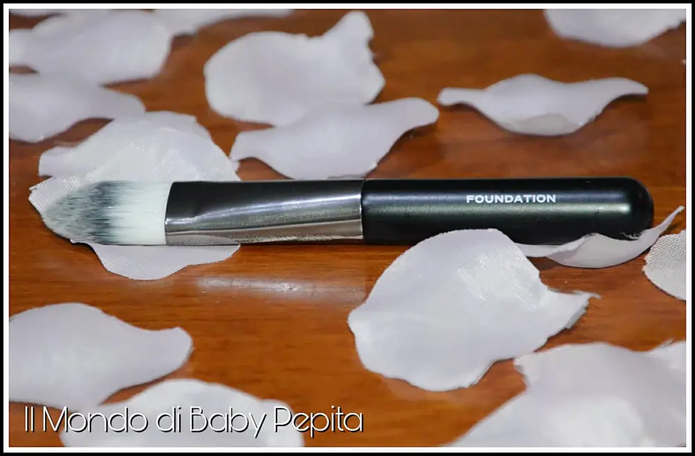
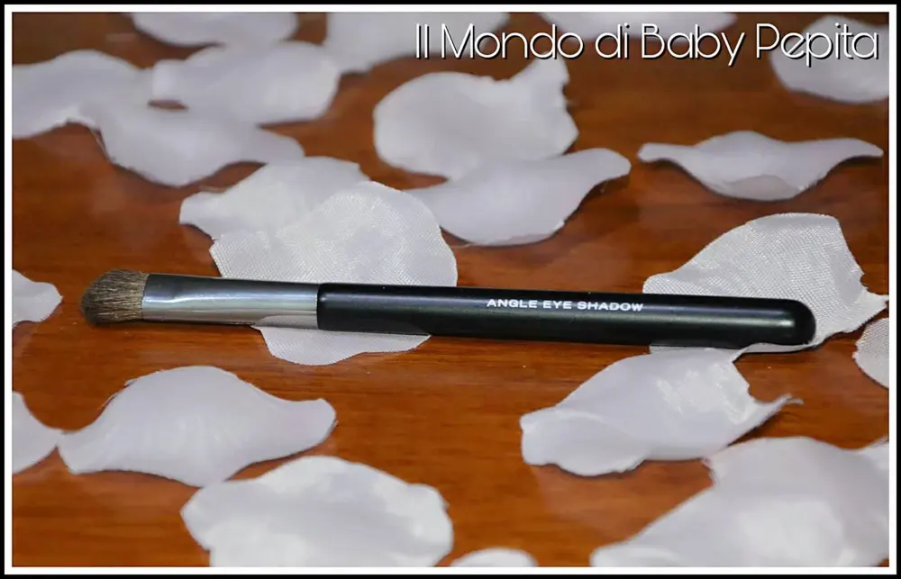
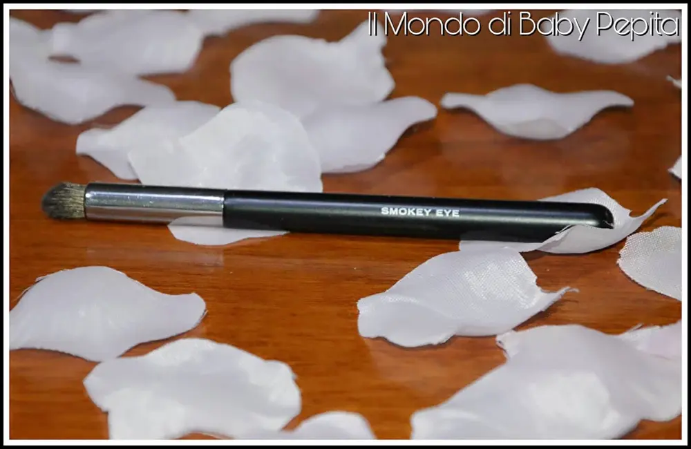
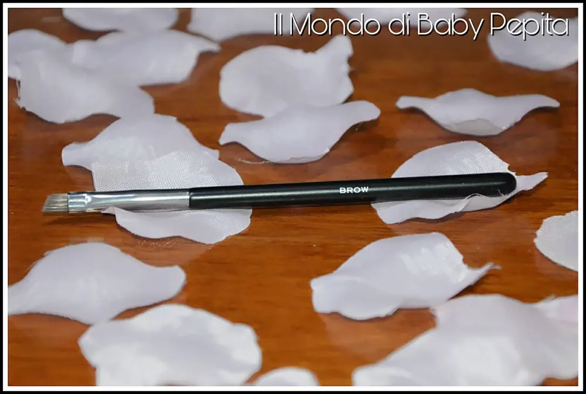
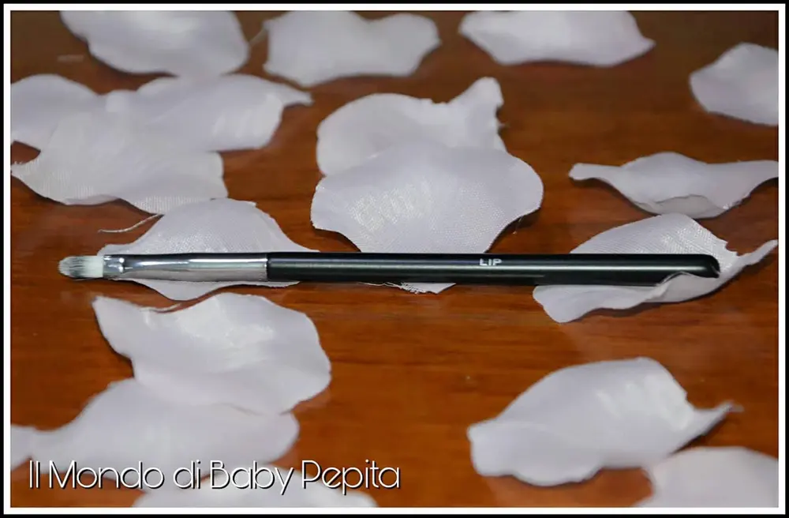

PENNELLI PER IL MAKEUP
I pennelli makeup non sono mai abbastanza per una donna. Più ne ha più ne vuole. Sfumare, colorare, ombreggiare, insomma non ne facciamo a meno per un makeup d'eccellenza.
Oggi vi mostro un set di pennelli che oltre ad essere buoni di qualità, hanno il vantaggio di essere alla portata di tutte le donne.
Sappiamo che molte volte per un pennello anche singolo siamo capaci di spendere davvero tanti soldi.Oggi invece, voglio farvi ricredere, e quindi portare avanti la tesi che non è che se spendi poco allora è di pessima qualità, assolutamente NO.

È un set di 6 pennelli base, per un make-up veloce.
È dotato infatti di astuccio quindi pratico per portarlo con noi in viaggio o a lavoro.

La custodia in simil-pelle è composta più più tasche; quelle principali per i pennelli ovviamente è anche un ulteriore tasca con la zip che può tornarci utile per inserire altri prodotti.

Comprende come abbiamo anticipato, 6 pennelli e sono:

1. POWDER: Pennello per la cipria (adattabile anche per applicare il blush essendo di misure ridotte), ma anche per distribuire la povere di riso su tutto il viso;

2. FOUNDATION: Pennello a lingua di gatto, detto così perché serve per applicare il fondotinta;

3. ANGLE EYE SHADOW: Pennello per ombretto, infatti ha un lato angolato che serve a sfumare gli ombretti nella piega dellocchio, ma ovviamente più essere usato anche per sfumare l'ombretto sulla palpebra mobile;

4. SMOKEY EYE: Pennello di precisione con la punta più stretta rispetto ad altri pennelli e anche con setole più dure perchè appunto creare uno smokey eye perfetto;

5. BROW: Pennello per delineare e colorare le sopracciglia con facilità;

6. LIP: Pennello per le labbra, questo pennello infatti serve ad applicare rossetti e gloss senza sbavare.
Le setole sono morbide e delicate, è una coccola per il viso davvero.
Non hanno uno strano odore, cosa per me importante.
La cosa che trovo comoda e professionale è che su ogni pennello c'è scritto il nome del suo utilizzo. Facile anche per chi non ha esperienza con il makeup.
Mi piace perché si presenta semplice, pratico e con lo stretto necessario per un trucco impeccabile.
Consiglio questi pennelli perchè vi dirò, io li sto usando e mi trovo bene, quindi fate un pò voi :D